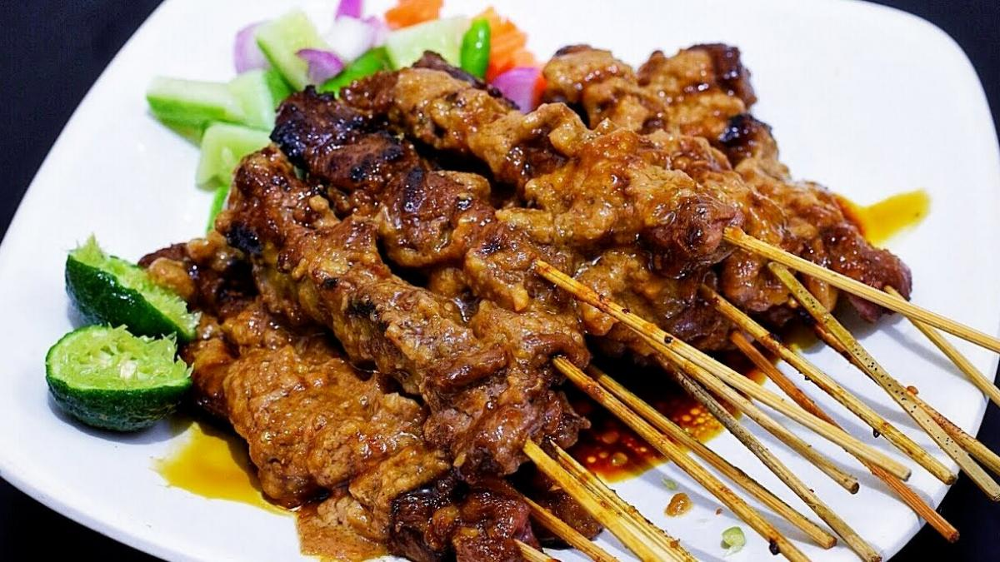

Resep Sate Madura
Bahan-bahan :
- 500 gram daging ayam (potong dadu kecil-kecil).
- 100 ml kecap manis.
- 5 siung bawang putih (haluskan).
- 1 sdt ketumbar bubuk.
- 1 sdt garam.
- 2 sdm minyak goreng.
- 50 tusuk sate.
Bumbu Kacang :
- 200 gram kacang tanah (goreng).
- 4 siung bawang putih.
- 2 buah cabai merah besar.
- 3 lembar daun jeruk.
- 1 sdt garam.
- 100 ml air.
- 2 sdm kecap manis.
Cara Membuatnya :
- Campurkan daging ayam dengan bawang putih, ketumbar, garam, minyak goreng, dan kecap manis. Aduk hingga merata.
- Tusuk-tusuk daging ayam yang sudah dibumbui ke dalam tusuk sate.
- Bakar sate di atas arang atau panggangan hingga matang sambil sesekali diolesi sisa bumbu.
- Untuk bumbu kacang, haluskan kacang tanah bersama bawang putih, cabai merah, dan garam. Tambahkan air dan daun jeruk, lalu masak hingga mengental.
- Sajikan sate dengan bumbu kacang dan kecap manis sesuai selera.